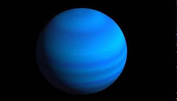

|

URANÜS
Uranüs, Güneş’e en yakın yedinci gezegen olup Güneş Sistemi’nin en soğuk ve en sıra dışı gezegenlerinden biridir. Jüpiter ve Satürn gibi bir gaz devidir,
ancak bileşimi farklıdır; bu nedenle Uranüs genellikle bir buz devi olarak sınıflandırılır. Atmosferinde hidrojen ve helyumun yanı sıra bol miktarda metan
gazı bulunur. Bu metan, güneş ışığını soğurarak gezegene mavi-yeşil rengini verir.
Uranüs’ün en dikkat çekici özelliği, ekseni neredeyse tamamen yan yatık bir şekilde dönmesidir. Eksen eğikliği yaklaşık 98 derecedir, yani gezegen adeta
yanına devrilmiş durumdadır. Bu da mevsimlerinin son derece uzun ve uç koşullarda geçmesine neden olur. Uranüs’te bir mevsim yaklaşık 21 Dünya yılı sürer;
bir tam Uranüs yılı ise 84 Dünya yılına eşittir.
Gezegenin sıcaklığı -220°C’ye kadar düşebilir, bu da onu Güneş Sistemi’nin en soğuk gezegeni yapar. Kalın atmosferi, hidrojen, helyum ve donmuş metan
tabakalarından oluşur. Bu tabakaların altında büyük olasılıkla su, amonyak ve metan buzundan oluşan bir iç yapı vardır.
Uranüs’ün halkaları da vardır, ancak Satürn’ün halkaları kadar belirgin değildir. Bu halkalar karanlık, ince ve çoğunlukla toz ve kaya parçalarından oluşur.
Ayrıca Uranüs’ün 27 bilinen uydusu vardır. Bu uyduların çoğuna Shakespeare ve Alexander Pope’un eserlerindeki karakterlerin isimleri verilmiştir;
örneğin Titania, Oberon, Miranda ve Ariel.
Kendi ekseni etrafındaki dönüşünü yaklaşık 17 saatte tamamlar. Ancak ekseninin yatık olması nedeniyle, kutupları uzun süre Güneş’e dönük kalır ve bu
bölgeler onlarca yıl boyunca sürekli gündüz ya da gece yaşar.
Uranüs çıplak gözle Dünya’dan zor seçilir, ancak teleskopla bakıldığında soluk mavi bir nokta şeklinde görünür. 1781 yılında İngiliz astronom William
Herschel tarafından keşfedilen Uranüs, modern çağda teleskopla keşfedilen ilk gezegendir.
Sonuç olarak Uranüs, hem fiziksel özellikleri hem de alışılmadık dönüş biçimiyle Güneş Sistemi’nde eşine rastlanmayan bir gezegendir. Soğuk atmosferi,
yatık ekseni ve gizemli iç yapısıyla, bilim dünyasının hâlâ tam olarak çözemediği pek çok sır barındırır.
|